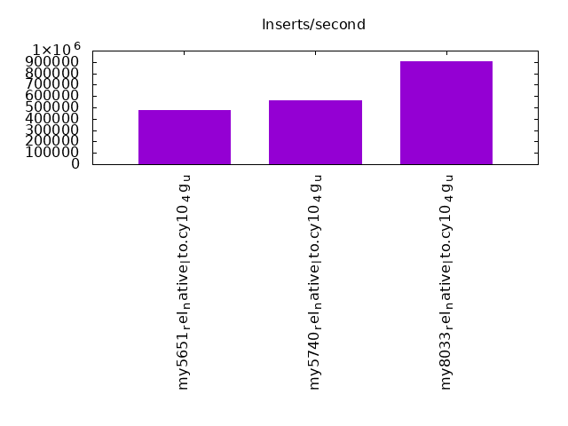
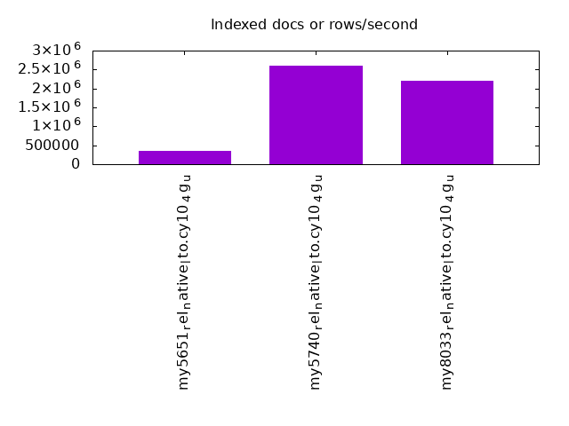
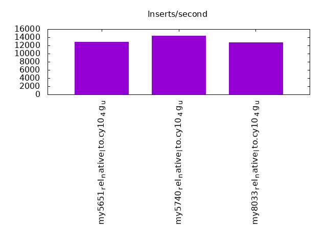
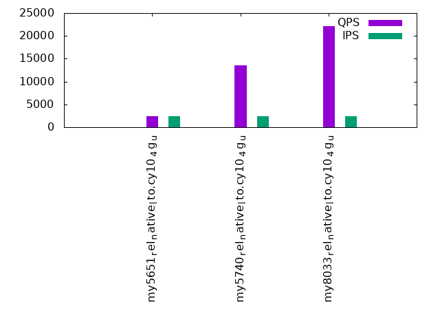
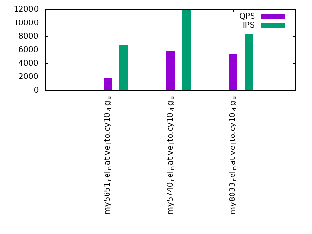
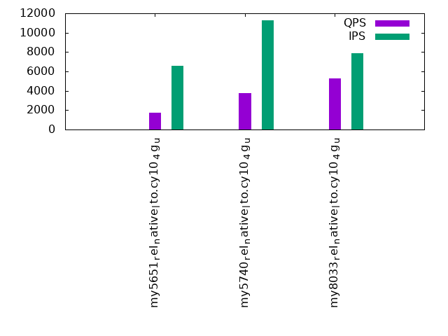

This is a report for the insert benchmark with 480M docs and 24 client(s). It is generated by scripts (bash, awk, sed) and Tufte might not be impressed. An overview of the insert benchmark is here and a short update is here. Below, by DBMS, I mean DBMS+version.config. An example is my8020.c10b40 where my means MySQL, 8020 is version 8.0.20 and c10b40 is the name for the configuration file.
The test server has 80 cores with hyperthreads enabled, 256G RAM and fast storage. The benchmark was run with 24 clients and there were 1 or 3 connections per client (1 for queries or inserts without rate limits, 1+1 for rate limited inserts+deletes). There are 24 tables, with a client per table. It loads 480M rows without secondary indexes, creates secondary indexes, then inserts 120M rows with a delete per insert to avoid growing the table. It then does 3 read+write tests for 3600s each that do queries as fast as possible with 100, 500 and then 1000 inserts/second/client concurrent with the queries and 1000 deletes/second to avoid growing the table. The database is cached by the OS but not by InnoDB.
The tested DBMS are:
The numbers are inserts/s for l.i0 and l.i1, indexed docs (or rows) /s for l.x and queries/s for q*.2. The values are the average rate over the entire test for inserts (IPS) and queries (QPS). The range of values for IPS and QPS is split into 3 parts: bottom 25%, middle 50%, top 25%. Values in the bottom 25% have a red background, values in the top 25% have a green background and values in the middle have no color. A gray background is used for values that can be ignored because the DBMS did not sustain the target insert rate. Red backgrounds are not used when the minimum value is within 80% of the max value.
| dbms | l.i0 | l.x | l.i1 | q100.1 | q500.1 | q1000.1 |
|---|---|---|---|---|---|---|
| my5651_rel_native_lto.cy10_4g_u | 480000 | 361521 | 12820 | 2422 | 1764 | 1704 |
| my5740_rel_native_lto.cy10_4g_u | 565371 | 2595135 | 14332 | 13544 | 5825 | 3725 |
| my8033_rel_native_lto.cy10_4g_u | 909091 | 2212442 | 12784 | 22098 | 5399 | 5250 |
This table has relative throughput, throughput for the DBMS relative to the DBMS in the first line, using the absolute throughput from the previous table. Values less than 0.95 have a yellow background. Values greater than 1.05 have a blue background.
| dbms | l.i0 | l.x | l.i1 | q100.1 | q500.1 | q1000.1 |
|---|---|---|---|---|---|---|
| my5651_rel_native_lto.cy10_4g_u | 1.00 | 1.00 | 1.00 | 1.00 | 1.00 | 1.00 |
| my5740_rel_native_lto.cy10_4g_u | 1.18 | 7.18 | 1.12 | 5.59 | 3.30 | 2.19 |
| my8033_rel_native_lto.cy10_4g_u | 1.89 | 6.12 | 1.00 | 9.12 | 3.06 | 3.08 |
This lists the average rate of inserts/s for the tests that do inserts concurrent with queries. For such tests the query rate is listed in the table above. The read+write tests are setup so that the insert rate should match the target rate every second. Cells that are not at least 95% of the target have a red background to indicate a failure to satisfy the target.
| dbms | q100.1 | q500.1 | q1000.1 |
|---|---|---|---|
| my5651_rel_native_lto.cy10_4g_u | 2378 | 6716 | 6570 |
| my5740_rel_native_lto.cy10_4g_u | 2380 | 11901 | 11262 |
| my8033_rel_native_lto.cy10_4g_u | 2381 | 8414 | 7870 |
| target | 2400 | 12000 | 24000 |
l.i0: load without secondary indexes. Graphs for performance per 1-second interval are here.
Average throughput:
Insert response time histogram: each cell has the percentage of responses that take <= the time in the header and max is the max response time in seconds. For the max column values in the top 25% of the range have a red background and in the bottom 25% of the range have a green background. The red background is not used when the min value is within 80% of the max value.
| dbms | 256us | 1ms | 4ms | 16ms | 64ms | 256ms | 1s | 4s | 16s | gt | max |
|---|---|---|---|---|---|---|---|---|---|---|---|
| my5651_rel_native_lto.cy10_4g_u | 0.324 | 11.208 | 88.282 | 0.143 | 0.043 | 0.096 | |||||
| my5740_rel_native_lto.cy10_4g_u | 0.193 | 47.744 | 52.015 | 0.005 | 0.043 | 0.090 | |||||
| my8033_rel_native_lto.cy10_4g_u | 99.776 | 0.176 | 0.005 | 0.043 | 0.120 |
Performance metrics for the DBMS listed above. Some are normalized by throughput, others are not. Legend for results is here.
ips qps rps rmbps wps wmbps rpq rkbpq wpi wkbpi csps cpups cspq cpupq dbgb1 dbgb2 rss maxop p50 p99 tag 480000 0 0 0.0 1469.6 119.6 0.000 0.000 0.003 0.255 77260 38.2 0.161 64 31.8 160.3 4.7 0.096 20579 17682 480m.my5651_rel_native_lto.cy10_4g_u 565371 0 0 0.0 1849.8 142.1 0.000 0.000 0.003 0.257 90151 40.1 0.159 57 31.8 160.3 4.5 0.090 24176 21678 480m.my5740_rel_native_lto.cy10_4g_u 909091 0 0 0.0 3586.3 239.3 0.000 0.000 0.004 0.270 216462 51.3 0.238 45 31.7 160.3 4.8 0.120 39960 34562 480m.my8033_rel_native_lto.cy10_4g_u
l.x: create secondary indexes.
Average throughput:
Performance metrics for the DBMS listed above. Some are normalized by throughput, others are not. Legend for results is here.
ips qps rps rmbps wps wmbps rpq rkbpq wpi wkbpi csps cpups cspq cpupq dbgb1 dbgb2 rss maxop p50 p99 tag 361521 0 0 0.0 16847.9 617.7 0.000 0.000 0.047 1.750 97075 31.0 0.269 69 65.2 193.7 5.3 0.002 NA NA 480m.my5651_rel_native_lto.cy10_4g_u 2595135 0 1 0.1 23225.7 1987.2 0.000 0.000 0.009 0.784 124631 27.0 0.048 8 70.8 199.3 5.1 0.002 NA NA 480m.my5740_rel_native_lto.cy10_4g_u 2212442 0 11956 579.9 36888.7 1616.5 0.005 0.268 0.017 0.748 206986 79.5 0.094 29 70.6 199.2 4.8 0.006 NA NA 480m.my8033_rel_native_lto.cy10_4g_u
l.i1: continue load after secondary indexes created. Graphs for performance per 1-second interval are here.
Average throughput:
Insert response time histogram: each cell has the percentage of responses that take <= the time in the header and max is the max response time in seconds. For the max column values in the top 25% of the range have a red background and in the bottom 25% of the range have a green background. The red background is not used when the min value is within 80% of the max value.
| dbms | 256us | 1ms | 4ms | 16ms | 64ms | 256ms | 1s | 4s | 16s | gt | max |
|---|---|---|---|---|---|---|---|---|---|---|---|
| my5651_rel_native_lto.cy10_4g_u | 0.005 | 0.087 | 41.021 | 54.598 | 4.289 | 0.001 | 1.356 | ||||
| my5740_rel_native_lto.cy10_4g_u | nonzero | 0.831 | 63.862 | 30.031 | 5.138 | 0.136 | 0.001 | 6.573 | |||
| my8033_rel_native_lto.cy10_4g_u | 0.005 | 5.192 | 54.899 | 35.526 | 4.174 | 0.146 | 0.058 | 9.031 |
Delete response time histogram: each cell has the percentage of responses that take <= the time in the header and max is the max response time in seconds. For the max column values in the top 25% of the range have a red background and in the bottom 25% of the range have a green background. The red background is not used when the min value is within 80% of the max value.
| dbms | 256us | 1ms | 4ms | 16ms | 64ms | 256ms | 1s | 4s | 16s | gt | max |
|---|---|---|---|---|---|---|---|---|---|---|---|
| my5651_rel_native_lto.cy10_4g_u | 0.043 | 0.925 | 43.624 | 52.349 | 3.058 | nonzero | 1.187 | ||||
| my5740_rel_native_lto.cy10_4g_u | 0.048 | 2.622 | 66.272 | 27.144 | 3.788 | 0.126 | 0.001 | 6.532 | |||
| my8033_rel_native_lto.cy10_4g_u | 0.071 | 7.147 | 56.324 | 32.697 | 3.562 | 0.147 | 0.052 | 8.925 |
Performance metrics for the DBMS listed above. Some are normalized by throughput, others are not. Legend for results is here.
ips qps rps rmbps wps wmbps rpq rkbpq wpi wkbpi csps cpups cspq cpupq dbgb1 dbgb2 rss maxop p50 p99 tag 12820 0 268 1.2 38001.4 725.6 0.021 0.100 2.964 57.957 489769 47.4 38.202 2958 116.7 254.1 5.3 1.356 549 150 480m.my5651_rel_native_lto.cy10_4g_u 14332 0 7 0.5 29005.2 775.8 0.000 0.036 2.024 55.432 375300 36.7 26.187 2049 117.5 256.0 5.1 6.573 549 0 480m.my5740_rel_native_lto.cy10_4g_u 12784 0 39 0.7 27681.0 803.1 0.003 0.053 2.165 64.331 554175 36.1 43.350 2259 117.4 256.2 4.8 9.031 0 0 480m.my8033_rel_native_lto.cy10_4g_u
q100.1: range queries with 100 insert/s per client. Graphs for performance per 1-second interval are here.
Average throughput:
Query response time histogram: each cell has the percentage of responses that take <= the time in the header and max is the max response time in seconds. For max values in the top 25% of the range have a red background and in the bottom 25% of the range have a green background. The red background is not used when the min value is within 80% of the max value.
| dbms | 256us | 1ms | 4ms | 16ms | 64ms | 256ms | 1s | 4s | 16s | gt | max |
|---|---|---|---|---|---|---|---|---|---|---|---|
| my5651_rel_native_lto.cy10_4g_u | 1.888 | 9.412 | 23.727 | 45.087 | 19.626 | 0.261 | nonzero | 0.358 | |||
| my5740_rel_native_lto.cy10_4g_u | 2.914 | 33.316 | 56.957 | 6.767 | 0.046 | nonzero | 0.203 | ||||
| my8033_rel_native_lto.cy10_4g_u | 1.394 | 56.861 | 40.574 | 1.164 | 0.007 | nonzero | nonzero | 0.526 |
Insert response time histogram: each cell has the percentage of responses that take <= the time in the header and max is the max response time in seconds. For max values in the top 25% of the range have a red background and in the bottom 25% of the range have a green background. The red background is not used when the min value is within 80% of the max value.
| dbms | 256us | 1ms | 4ms | 16ms | 64ms | 256ms | 1s | 4s | 16s | gt | max |
|---|---|---|---|---|---|---|---|---|---|---|---|
| my5651_rel_native_lto.cy10_4g_u | 0.004 | 0.762 | 4.013 | 47.523 | 47.698 | 0.887 | |||||
| my5740_rel_native_lto.cy10_4g_u | 0.204 | 96.130 | 3.624 | 0.042 | 0.213 | ||||||
| my8033_rel_native_lto.cy10_4g_u | 0.140 | 76.136 | 23.698 | 0.025 | 0.001 | 0.331 |
Delete response time histogram: each cell has the percentage of responses that take <= the time in the header and max is the max response time in seconds. For max values in the top 25% of the range have a red background and in the bottom 25% of the range have a green background. The red background is not used when the min value is within 80% of the max value.
| dbms | 256us | 1ms | 4ms | 16ms | 64ms | 256ms | 1s | 4s | 16s | gt | max |
|---|---|---|---|---|---|---|---|---|---|---|---|
| my5651_rel_native_lto.cy10_4g_u | 0.010 | 0.808 | 4.051 | 48.238 | 46.892 | 0.782 | |||||
| my5740_rel_native_lto.cy10_4g_u | 0.299 | 96.501 | 3.159 | 0.041 | 0.215 | ||||||
| my8033_rel_native_lto.cy10_4g_u | 0.303 | 78.554 | 21.122 | 0.020 | 0.001 | 0.391 |
Performance metrics for the DBMS listed above. Some are normalized by throughput, others are not. Legend for results is here.
ips qps rps rmbps wps wmbps rpq rkbpq wpi wkbpi csps cpups cspq cpupq dbgb1 dbgb2 rss maxop p50 p99 tag 2378 2422 267 4.2 11823.2 275.9 0.110 1.760 4.972 118.820 215899 37.8 89.145 12486 117.0 254.8 5.3 0.358 96 80 480m.my5651_rel_native_lto.cy10_4g_u 2380 13544 56 1.2 58856.4 1069.1 0.004 0.090 24.729 459.968 677403 32.5 50.015 1920 117.5 256.0 5.1 0.203 559 176 480m.my5740_rel_native_lto.cy10_4g_u 2381 22098 67 1.3 58524.8 1120.0 0.003 0.060 24.582 481.733 651404 35.7 29.478 1292 117.4 256.2 4.8 0.526 911 767 480m.my8033_rel_native_lto.cy10_4g_u
q500.1: range queries with 500 insert/s per client. Graphs for performance per 1-second interval are here.
Average throughput:
Query response time histogram: each cell has the percentage of responses that take <= the time in the header and max is the max response time in seconds. For max values in the top 25% of the range have a red background and in the bottom 25% of the range have a green background. The red background is not used when the min value is within 80% of the max value.
| dbms | 256us | 1ms | 4ms | 16ms | 64ms | 256ms | 1s | 4s | 16s | gt | max |
|---|---|---|---|---|---|---|---|---|---|---|---|
| my5651_rel_native_lto.cy10_4g_u | 1.207 | 6.587 | 16.890 | 44.672 | 29.642 | 1.001 | 0.001 | 0.617 | |||
| my5740_rel_native_lto.cy10_4g_u | 2.920 | 16.347 | 48.904 | 29.273 | 2.445 | 0.086 | 0.025 | 0.992 | |||
| my8033_rel_native_lto.cy10_4g_u | 1.035 | 32.842 | 41.683 | 19.831 | 4.292 | 0.240 | 0.076 | nonzero | 1.821 |
Insert response time histogram: each cell has the percentage of responses that take <= the time in the header and max is the max response time in seconds. For max values in the top 25% of the range have a red background and in the bottom 25% of the range have a green background. The red background is not used when the min value is within 80% of the max value.
| dbms | 256us | 1ms | 4ms | 16ms | 64ms | 256ms | 1s | 4s | 16s | gt | max |
|---|---|---|---|---|---|---|---|---|---|---|---|
| my5651_rel_native_lto.cy10_4g_u | 0.006 | 0.088 | 4.141 | 85.950 | 9.815 | 0.842 | |||||
| my5740_rel_native_lto.cy10_4g_u | 0.003 | 5.001 | 81.075 | 12.661 | 1.256 | 0.004 | 1.606 | ||||
| my8033_rel_native_lto.cy10_4g_u | 0.008 | 0.870 | 25.973 | 62.623 | 10.386 | 0.141 | 2.562 |
Delete response time histogram: each cell has the percentage of responses that take <= the time in the header and max is the max response time in seconds. For max values in the top 25% of the range have a red background and in the bottom 25% of the range have a green background. The red background is not used when the min value is within 80% of the max value.
| dbms | 256us | 1ms | 4ms | 16ms | 64ms | 256ms | 1s | 4s | 16s | gt | max |
|---|---|---|---|---|---|---|---|---|---|---|---|
| my5651_rel_native_lto.cy10_4g_u | 0.011 | 0.087 | 4.251 | 86.361 | 9.290 | nonzero | 1.585 | ||||
| my5740_rel_native_lto.cy10_4g_u | 0.006 | 5.585 | 81.093 | 12.281 | 1.032 | 0.003 | 1.552 | ||||
| my8033_rel_native_lto.cy10_4g_u | 0.015 | 0.902 | 26.436 | 62.529 | 10.009 | 0.108 | 3.191 |
Performance metrics for the DBMS listed above. Some are normalized by throughput, others are not. Legend for results is here.
ips qps rps rmbps wps wmbps rpq rkbpq wpi wkbpi csps cpups cspq cpupq dbgb1 dbgb2 rss maxop p50 p99 tag 6716 1764 99 1.9 27162.4 471.8 0.056 1.120 4.044 71.927 491290 58.2 278.478 26392 119.4 259.8 5.3 0.617 80 48 480m.my5651_rel_native_lto.cy10_4g_u 11901 5825 313 6.1 48821.2 971.7 0.054 1.066 4.102 83.609 557492 48.0 95.710 6593 117.8 256.6 5.2 0.992 256 128 480m.my5740_rel_native_lto.cy10_4g_u 8414 5399 227 4.4 30637.5 784.8 0.042 0.839 3.641 95.509 521663 49.4 96.620 7320 117.6 258.6 4.8 1.821 240 112 480m.my8033_rel_native_lto.cy10_4g_u
q1000.1: range queries with 1000 insert/s per client. Graphs for performance per 1-second interval are here.
Average throughput:
Query response time histogram: each cell has the percentage of responses that take <= the time in the header and max is the max response time in seconds. For max values in the top 25% of the range have a red background and in the bottom 25% of the range have a green background. The red background is not used when the min value is within 80% of the max value.
| dbms | 256us | 1ms | 4ms | 16ms | 64ms | 256ms | 1s | 4s | 16s | gt | max |
|---|---|---|---|---|---|---|---|---|---|---|---|
| my5651_rel_native_lto.cy10_4g_u | 1.175 | 6.496 | 16.684 | 43.818 | 30.534 | 1.292 | 0.001 | 0.602 | |||
| my5740_rel_native_lto.cy10_4g_u | 1.550 | 19.169 | 40.870 | 29.823 | 8.097 | 0.405 | 0.085 | nonzero | 1.748 | ||
| my8033_rel_native_lto.cy10_4g_u | 0.584 | 32.257 | 41.038 | 21.143 | 4.682 | 0.228 | 0.064 | 0.003 | 2.760 |
Insert response time histogram: each cell has the percentage of responses that take <= the time in the header and max is the max response time in seconds. For max values in the top 25% of the range have a red background and in the bottom 25% of the range have a green background. The red background is not used when the min value is within 80% of the max value.
| dbms | 256us | 1ms | 4ms | 16ms | 64ms | 256ms | 1s | 4s | 16s | gt | max |
|---|---|---|---|---|---|---|---|---|---|---|---|
| my5651_rel_native_lto.cy10_4g_u | 0.003 | 0.040 | 4.232 | 83.873 | 11.852 | nonzero | 1.143 | ||||
| my5740_rel_native_lto.cy10_4g_u | nonzero | 0.427 | 40.456 | 52.901 | 6.163 | 0.053 | 2.123 | ||||
| my8033_rel_native_lto.cy10_4g_u | nonzero | 0.234 | 20.804 | 66.553 | 12.093 | 0.315 | 3.994 |
Delete response time histogram: each cell has the percentage of responses that take <= the time in the header and max is the max response time in seconds. For max values in the top 25% of the range have a red background and in the bottom 25% of the range have a green background. The red background is not used when the min value is within 80% of the max value.
| dbms | 256us | 1ms | 4ms | 16ms | 64ms | 256ms | 1s | 4s | 16s | gt | max |
|---|---|---|---|---|---|---|---|---|---|---|---|
| my5651_rel_native_lto.cy10_4g_u | 0.006 | 0.039 | 4.296 | 84.328 | 11.331 | nonzero | 1.003 | ||||
| my5740_rel_native_lto.cy10_4g_u | 0.001 | 0.439 | 41.628 | 52.488 | 5.412 | 0.031 | 2.002 | ||||
| my8033_rel_native_lto.cy10_4g_u | 0.001 | 0.258 | 21.202 | 66.590 | 11.732 | 0.216 | 2.884 |
Performance metrics for the DBMS listed above. Some are normalized by throughput, others are not. Legend for results is here.
ips qps rps rmbps wps wmbps rpq rkbpq wpi wkbpi csps cpups cspq cpupq dbgb1 dbgb2 rss maxop p50 p99 tag 6570 1704 179 0.8 26812.0 462.5 0.105 0.458 4.081 72.094 490225 58.4 287.674 27416 124.1 269.8 5.3 0.602 64 48 480m.my5651_rel_native_lto.cy10_4g_u 11262 3725 6 0.1 33847.5 763.7 0.001 0.030 3.006 69.445 463692 54.2 124.485 11641 122.9 267.6 5.2 1.748 160 48 480m.my5740_rel_native_lto.cy10_4g_u 7870 5250 3 0.1 30202.3 775.4 0.001 0.020 3.838 100.885 514295 50.1 97.967 7635 122.0 269.0 4.8 2.760 224 80 480m.my8033_rel_native_lto.cy10_4g_u
l.i0: load without secondary indexes
Performance metrics for all DBMS, not just the ones listed above. Some are normalized by throughput, others are not. Legend for results is here.
ips qps rps rmbps wps wmbps rpq rkbpq wpi wkbpi csps cpups cspq cpupq dbgb1 dbgb2 rss maxop p50 p99 tag 480000 0 0 0.0 1469.6 119.6 0.000 0.000 0.003 0.255 77260 38.2 0.161 64 31.8 160.3 4.7 0.096 20579 17682 480m.my5651_rel_native_lto.cy10_4g_u 565371 0 0 0.0 1849.8 142.1 0.000 0.000 0.003 0.257 90151 40.1 0.159 57 31.8 160.3 4.5 0.090 24176 21678 480m.my5740_rel_native_lto.cy10_4g_u 909091 0 0 0.0 3586.3 239.3 0.000 0.000 0.004 0.270 216462 51.3 0.238 45 31.7 160.3 4.8 0.120 39960 34562 480m.my8033_rel_native_lto.cy10_4g_u
l.x: create secondary indexes
Performance metrics for all DBMS, not just the ones listed above. Some are normalized by throughput, others are not. Legend for results is here.
ips qps rps rmbps wps wmbps rpq rkbpq wpi wkbpi csps cpups cspq cpupq dbgb1 dbgb2 rss maxop p50 p99 tag 361521 0 0 0.0 16847.9 617.7 0.000 0.000 0.047 1.750 97075 31.0 0.269 69 65.2 193.7 5.3 0.002 NA NA 480m.my5651_rel_native_lto.cy10_4g_u 2595135 0 1 0.1 23225.7 1987.2 0.000 0.000 0.009 0.784 124631 27.0 0.048 8 70.8 199.3 5.1 0.002 NA NA 480m.my5740_rel_native_lto.cy10_4g_u 2212442 0 11956 579.9 36888.7 1616.5 0.005 0.268 0.017 0.748 206986 79.5 0.094 29 70.6 199.2 4.8 0.006 NA NA 480m.my8033_rel_native_lto.cy10_4g_u
l.i1: continue load after secondary indexes created
Performance metrics for all DBMS, not just the ones listed above. Some are normalized by throughput, others are not. Legend for results is here.
ips qps rps rmbps wps wmbps rpq rkbpq wpi wkbpi csps cpups cspq cpupq dbgb1 dbgb2 rss maxop p50 p99 tag 12820 0 268 1.2 38001.4 725.6 0.021 0.100 2.964 57.957 489769 47.4 38.202 2958 116.7 254.1 5.3 1.356 549 150 480m.my5651_rel_native_lto.cy10_4g_u 14332 0 7 0.5 29005.2 775.8 0.000 0.036 2.024 55.432 375300 36.7 26.187 2049 117.5 256.0 5.1 6.573 549 0 480m.my5740_rel_native_lto.cy10_4g_u 12784 0 39 0.7 27681.0 803.1 0.003 0.053 2.165 64.331 554175 36.1 43.350 2259 117.4 256.2 4.8 9.031 0 0 480m.my8033_rel_native_lto.cy10_4g_u
q100.1: range queries with 100 insert/s per client
Performance metrics for all DBMS, not just the ones listed above. Some are normalized by throughput, others are not. Legend for results is here.
ips qps rps rmbps wps wmbps rpq rkbpq wpi wkbpi csps cpups cspq cpupq dbgb1 dbgb2 rss maxop p50 p99 tag 2378 2422 267 4.2 11823.2 275.9 0.110 1.760 4.972 118.820 215899 37.8 89.145 12486 117.0 254.8 5.3 0.358 96 80 480m.my5651_rel_native_lto.cy10_4g_u 2380 13544 56 1.2 58856.4 1069.1 0.004 0.090 24.729 459.968 677403 32.5 50.015 1920 117.5 256.0 5.1 0.203 559 176 480m.my5740_rel_native_lto.cy10_4g_u 2381 22098 67 1.3 58524.8 1120.0 0.003 0.060 24.582 481.733 651404 35.7 29.478 1292 117.4 256.2 4.8 0.526 911 767 480m.my8033_rel_native_lto.cy10_4g_u
q500.1: range queries with 500 insert/s per client
Performance metrics for all DBMS, not just the ones listed above. Some are normalized by throughput, others are not. Legend for results is here.
ips qps rps rmbps wps wmbps rpq rkbpq wpi wkbpi csps cpups cspq cpupq dbgb1 dbgb2 rss maxop p50 p99 tag 6716 1764 99 1.9 27162.4 471.8 0.056 1.120 4.044 71.927 491290 58.2 278.478 26392 119.4 259.8 5.3 0.617 80 48 480m.my5651_rel_native_lto.cy10_4g_u 11901 5825 313 6.1 48821.2 971.7 0.054 1.066 4.102 83.609 557492 48.0 95.710 6593 117.8 256.6 5.2 0.992 256 128 480m.my5740_rel_native_lto.cy10_4g_u 8414 5399 227 4.4 30637.5 784.8 0.042 0.839 3.641 95.509 521663 49.4 96.620 7320 117.6 258.6 4.8 1.821 240 112 480m.my8033_rel_native_lto.cy10_4g_u
q1000.1: range queries with 1000 insert/s per client
Performance metrics for all DBMS, not just the ones listed above. Some are normalized by throughput, others are not. Legend for results is here.
ips qps rps rmbps wps wmbps rpq rkbpq wpi wkbpi csps cpups cspq cpupq dbgb1 dbgb2 rss maxop p50 p99 tag 6570 1704 179 0.8 26812.0 462.5 0.105 0.458 4.081 72.094 490225 58.4 287.674 27416 124.1 269.8 5.3 0.602 64 48 480m.my5651_rel_native_lto.cy10_4g_u 11262 3725 6 0.1 33847.5 763.7 0.001 0.030 3.006 69.445 463692 54.2 124.485 11641 122.9 267.6 5.2 1.748 160 48 480m.my5740_rel_native_lto.cy10_4g_u 7870 5250 3 0.1 30202.3 775.4 0.001 0.020 3.838 100.885 514295 50.1 97.967 7635 122.0 269.0 4.8 2.760 224 80 480m.my8033_rel_native_lto.cy10_4g_u
Insert response time histogram
256us 1ms 4ms 16ms 64ms 256ms 1s 4s 16s gt max tag 0.000 0.324 11.208 88.282 0.143 0.043 0.000 0.000 0.000 0.000 0.096 my5651_rel_native_lto.cy10_4g_u 0.000 0.193 47.744 52.015 0.005 0.043 0.000 0.000 0.000 0.000 0.090 my5740_rel_native_lto.cy10_4g_u 0.000 0.000 99.776 0.176 0.005 0.043 0.000 0.000 0.000 0.000 0.120 my8033_rel_native_lto.cy10_4g_u
TODO - determine whether there is data for create index response time
Insert response time histogram
256us 1ms 4ms 16ms 64ms 256ms 1s 4s 16s gt max tag 0.000 0.000 0.005 0.087 41.021 54.598 4.289 0.001 0.000 0.000 1.356 my5651_rel_native_lto.cy10_4g_u 0.000 0.000 nonzero 0.831 63.862 30.031 5.138 0.136 0.001 0.000 6.573 my5740_rel_native_lto.cy10_4g_u 0.000 0.000 0.005 5.192 54.899 35.526 4.174 0.146 0.058 0.000 9.031 my8033_rel_native_lto.cy10_4g_u
Delete response time histogram
256us 1ms 4ms 16ms 64ms 256ms 1s 4s 16s gt max tag 0.000 0.000 0.043 0.925 43.624 52.349 3.058 nonzero 0.000 0.000 1.187 my5651_rel_native_lto.cy10_4g_u 0.000 0.000 0.048 2.622 66.272 27.144 3.788 0.126 0.001 0.000 6.532 my5740_rel_native_lto.cy10_4g_u 0.000 0.000 0.071 7.147 56.324 32.697 3.562 0.147 0.052 0.000 8.925 my8033_rel_native_lto.cy10_4g_u
Query response time histogram
256us 1ms 4ms 16ms 64ms 256ms 1s 4s 16s gt max tag 1.888 9.412 23.727 45.087 19.626 0.261 nonzero 0.000 0.000 0.000 0.358 my5651_rel_native_lto.cy10_4g_u 2.914 33.316 56.957 6.767 0.046 nonzero 0.000 0.000 0.000 0.000 0.203 my5740_rel_native_lto.cy10_4g_u 1.394 56.861 40.574 1.164 0.007 nonzero nonzero 0.000 0.000 0.000 0.526 my8033_rel_native_lto.cy10_4g_u
Insert response time histogram
256us 1ms 4ms 16ms 64ms 256ms 1s 4s 16s gt max tag 0.000 0.000 0.004 0.762 4.013 47.523 47.698 0.000 0.000 0.000 0.887 my5651_rel_native_lto.cy10_4g_u 0.000 0.000 0.204 96.130 3.624 0.042 0.000 0.000 0.000 0.000 0.213 my5740_rel_native_lto.cy10_4g_u 0.000 0.000 0.140 76.136 23.698 0.025 0.001 0.000 0.000 0.000 0.331 my8033_rel_native_lto.cy10_4g_u
Delete response time histogram
256us 1ms 4ms 16ms 64ms 256ms 1s 4s 16s gt max tag 0.000 0.000 0.010 0.808 4.051 48.238 46.892 0.000 0.000 0.000 0.782 my5651_rel_native_lto.cy10_4g_u 0.000 0.000 0.299 96.501 3.159 0.041 0.000 0.000 0.000 0.000 0.215 my5740_rel_native_lto.cy10_4g_u 0.000 0.000 0.303 78.554 21.122 0.020 0.001 0.000 0.000 0.000 0.391 my8033_rel_native_lto.cy10_4g_u
Query response time histogram
256us 1ms 4ms 16ms 64ms 256ms 1s 4s 16s gt max tag 1.207 6.587 16.890 44.672 29.642 1.001 0.001 0.000 0.000 0.000 0.617 my5651_rel_native_lto.cy10_4g_u 2.920 16.347 48.904 29.273 2.445 0.086 0.025 0.000 0.000 0.000 0.992 my5740_rel_native_lto.cy10_4g_u 1.035 32.842 41.683 19.831 4.292 0.240 0.076 nonzero 0.000 0.000 1.821 my8033_rel_native_lto.cy10_4g_u
Insert response time histogram
256us 1ms 4ms 16ms 64ms 256ms 1s 4s 16s gt max tag 0.000 0.000 0.006 0.088 4.141 85.950 9.815 0.000 0.000 0.000 0.842 my5651_rel_native_lto.cy10_4g_u 0.000 0.000 0.003 5.001 81.075 12.661 1.256 0.004 0.000 0.000 1.606 my5740_rel_native_lto.cy10_4g_u 0.000 0.000 0.008 0.870 25.973 62.623 10.386 0.141 0.000 0.000 2.562 my8033_rel_native_lto.cy10_4g_u
Delete response time histogram
256us 1ms 4ms 16ms 64ms 256ms 1s 4s 16s gt max tag 0.000 0.000 0.011 0.087 4.251 86.361 9.290 nonzero 0.000 0.000 1.585 my5651_rel_native_lto.cy10_4g_u 0.000 0.000 0.006 5.585 81.093 12.281 1.032 0.003 0.000 0.000 1.552 my5740_rel_native_lto.cy10_4g_u 0.000 0.000 0.015 0.902 26.436 62.529 10.009 0.108 0.000 0.000 3.191 my8033_rel_native_lto.cy10_4g_u
Query response time histogram
256us 1ms 4ms 16ms 64ms 256ms 1s 4s 16s gt max tag 1.175 6.496 16.684 43.818 30.534 1.292 0.001 0.000 0.000 0.000 0.602 my5651_rel_native_lto.cy10_4g_u 1.550 19.169 40.870 29.823 8.097 0.405 0.085 nonzero 0.000 0.000 1.748 my5740_rel_native_lto.cy10_4g_u 0.584 32.257 41.038 21.143 4.682 0.228 0.064 0.003 0.000 0.000 2.760 my8033_rel_native_lto.cy10_4g_u
Insert response time histogram
256us 1ms 4ms 16ms 64ms 256ms 1s 4s 16s gt max tag 0.000 0.000 0.003 0.040 4.232 83.873 11.852 nonzero 0.000 0.000 1.143 my5651_rel_native_lto.cy10_4g_u 0.000 0.000 nonzero 0.427 40.456 52.901 6.163 0.053 0.000 0.000 2.123 my5740_rel_native_lto.cy10_4g_u 0.000 0.000 nonzero 0.234 20.804 66.553 12.093 0.315 0.000 0.000 3.994 my8033_rel_native_lto.cy10_4g_u
Delete response time histogram
256us 1ms 4ms 16ms 64ms 256ms 1s 4s 16s gt max tag 0.000 0.000 0.006 0.039 4.296 84.328 11.331 nonzero 0.000 0.000 1.003 my5651_rel_native_lto.cy10_4g_u 0.000 0.000 0.001 0.439 41.628 52.488 5.412 0.031 0.000 0.000 2.002 my5740_rel_native_lto.cy10_4g_u 0.000 0.000 0.001 0.258 21.202 66.590 11.732 0.216 0.000 0.000 2.884 my8033_rel_native_lto.cy10_4g_u